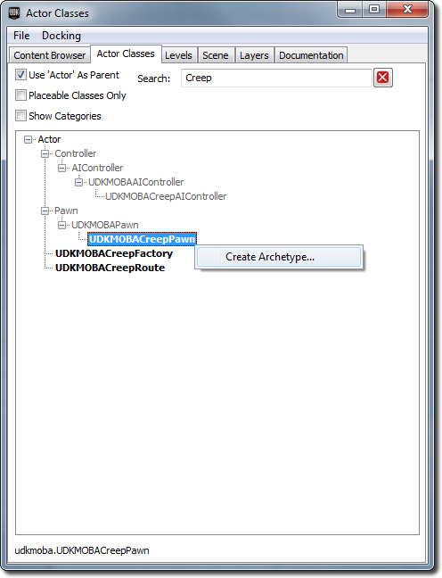
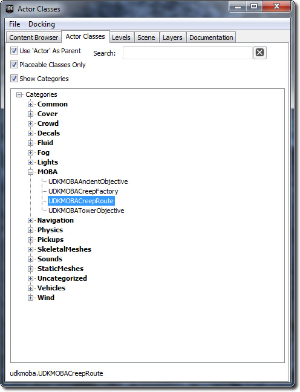
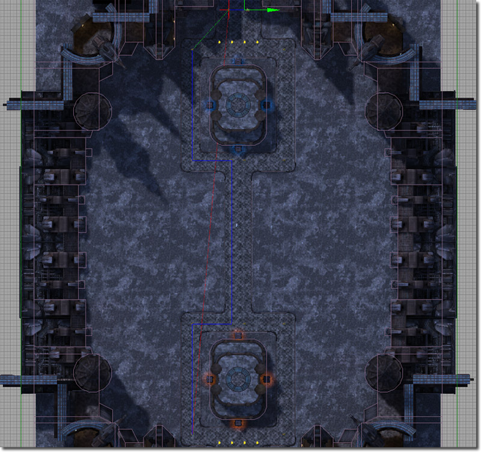

UDN
Search public documentation:
MOBAKitCreepsCH
English Translation
日本語訳
한국어
Interested in the Unreal Engine?
Visit the Unreal Technology site.
Looking for jobs and company info?
Check out the Epic games site.
Questions about support via UDN?
Contact the UDN Staff
日本語訳
한국어
Interested in the Unreal Engine?
Visit the Unreal Technology site.
Looking for jobs and company info?
Check out the Epic games site.
Questions about support via UDN?
Contact the UDN Staff
MOBA初学者工具包- Creeps
上次对UDK测试时间为 2012 年 5 月
概述
Creep是非玩家控制角色，它们拥有简单的AI，这样它们可以通过地图，瞄准并攻击附近的敌对creep，英雄和建筑。 相关的类为：
- UDKMOBACreepAIController -此类处理所有的creep pawn的人工智能。
- UDKMOBACreepFactory - 此类处理creep的重生并检测地图上由此批量生产者重生的creep数量。
- UDKMOBACreepPawn -此类是creep物理表现的pawn。
- UDKMOBACreepRoute -此类被用来展现creep应遵循的部分路径。
调试
 如果您需要额外的信息来获知在任何给定时间内creep在进行的行为，您可以通过打开控制器，使用~ 键并输入 showdebug aicreep 启用debug模式。 这将会调用行到creep想要移动的位置并文本显示creep所在的状态和状态区间。
您也可以通过使用 showdebug boundingboxes 来调试为creep生成的边界框。 这将会调用代表边界框的紫色框。
如果您需要额外的信息来获知在任何给定时间内creep在进行的行为，您可以通过打开控制器，使用~ 键并输入 showdebug aicreep 启用debug模式。 这将会调用行到creep想要移动的位置并文本显示creep所在的状态和状态区间。
您也可以通过使用 showdebug boundingboxes 来调试为creep生成的边界框。 这将会调用代表边界框的紫色框。
UDKMOBACreepAIController
UDKMOBACreepAIControlle是控制creep在任何给定时刻进行某种行动的“大脑”。 AI控制器会以一致的更新速率来简单地运行函数并评估如何来做。AI控制器也会接受事件从而使得它们能对身边发生的事件做出回应。
生成creep
Creep仅会在关卡放置的 UDKMOBACreepFactory::SpawnCreepTimer() 中生成。 当 UDKMOBACreepFactory::SpawnCreepTimer() 生成creep pawn, creep pawn将会使用在 UDKMOBAPawn::PostBeginPlay() 中被调用的 Pawn::SpawnDefaultController() 来自动生成 UDKMOBAAIController 。 当生成 UDKMOBAAIController 时，它将会自动处理并控制creep pawn。 从那个地方， UDKMOBACreepFactory::SpawnCreepTimer() 将会调用 UDKMOBACreepAIController::Initialize() . 这个函数通过缓存普遍使用的变量，设置AI循环和初始化帮助处理事件的Actor来设置AI控制器。WhatToDoNext()
UDKMOBAAIController::WhatToDoNext() 是主要的AI循环函数。 只要creep pawn为激活状态，目前被设置为每0.25f秒执行。 主AI循环非常简单，因为creep只有两种模式，要么根据预先定义的creep路径移动，要么攻击敌对creep,英雄或塔。 首先creep评估目前的敌人引用是否有效。 如果无效，那么清空敌人引用。 如果敌人引用无效（等同于无），那么creep将会在其可见攻击界面数列做基本搜索来看creep是否应该开始攻击其中的任何敌人。 如果敌人中的有任何对象为有效攻击对象，那么creep的AI控制器将会进入 AttackingCurrentEnemy 状态。 或者，如果敌人为有效攻击对象，creep的AI控制器将会进入 MovingAlongRoute 状态。VisibleAttackInterfaces数组
VisibleAttackInterfaces 是creep能'看到'的所有的实施 UDKMOBAAttackInterface 的Actor的数组。 Creep的视觉是通过触发器来更新的。 这在每次更新时被用在foreach迭代器上，因为这被证实在移动设备上能有更好的表现。 触发器通过将其与creep pawn连接而起作用。 当Actor触碰触发器（该触发器拥有圆柱体碰撞组件），然后 InternalOnSightTriggerTouch() 被调用。 如果他满足标准，此函数添加Actor到 VisibleAttackInterfaces 数组。 当Actor未触碰触发器时， InternalOnSightTriggerUnTouch 被调用。 这样模拟了creep基于事件的视野。MovingAlongRoute状态
在这种状态下，creep简单地通过生成它们的 UDKMOBACreepFactory 来按照预先设定的路径行动。 这是通过使用 SetDestinationPosition() 和 SetFocalPoint() 来完成的。 这些函数可用在 MoveTo(), MoveToward() 及其变量，因为这会导致更加依赖的行为。 在原生代码中，设置目标位置使得AIController调整其pawn的速度和加速度，这样pawn将会移向目标位置。 因为creep将以预先设定的速度移动，这样做就更加简单一点。 当pawn到达目标位置， ReachedPreciseDestination() 被调用。 如果发生这种情况，该状态跳转到 HasReachedDestination 模块。 每次 Tick() 目标位置Z被调整的原因是为了适应不平整的地形。 为使pawn到达目标位置，pawn的Z位置也必须在目标位置的错误边缘内。 因为从技术上来说，MOBA是2D游戏（自上而下），Z轴的信息不总是传递到移动坐标轴，而此之前造成了pawn的停顿。开始模块
这个模块确保creep是有效的并且处于合适的物理状态。 如果不是，则其会停止对此更新的执行，并重新评估下一次更新。 如果没有 CreepPawn ，则其会往下移动到 End 模块。MoveDirect模块
这个模块通过设置 bPreciseDestination 为真告知creep如何可以的话直接移动到目标位置。 设置这个布尔值使得控制器能自动调整pawn的速度和加速度。WaitingForReachedDestinationNotification 模块
这个模块让creep循环。 Sleep() 被用来防止无限循环。 当 ReachedPreciseDestination() 被调用时，此模块最终退出。HasReachedDestination 模块
这个模块处理在路径中向下一点的移动。 这是通过抓取在 UDKMOBACreepFactory 引用的路径Actor范围的路径列表内下一个Actor完成的。结束模块
AttackingCurrentEnemy 状态
它在 UDKMOBAAIController 中被定义。 请阅读[[]]页面获得关于该状态的更多信息。UDKMOBACreepFactory
Creep工厂是编辑器可放置的类，用来生成creep,维持creep的数量和提供其他信息给creep.
函数
- PostBeginPlay() - 当creep工厂被初始化时被调用
- CreepDied() -当由此工厂生成的creep被杀时调用。 这被用来维持 MaximumCreepCount 。
- SpawnCreepTimer() -由计时器调用，间隔被设置为 SpawnInterval. 此函数负责重生creep。
变量
- PawnArchetype -用来重生的UDKMOBACreepPawn原型。
- SpawnInterval - 以秒记的时间，在每个creep重生间。 这也可被视作creep重生的频率。
- Route - 所有此工厂生成的creep应使用的路径参照。 参见下方来学习如何创建新的creep路径。
- MaximumCreepCount - 游戏中在任何时候此工厂的最大数量的creep. 基于性能表现因素，这可以帮助关卡设计师来控制creep数量。
- TeamIndex -由此工厂生成的所有creep所在的队伍的目录。
UDKMOBACreepPawn
该类是游戏世界的creep的物理表现。
函数
- PostBeginPlay() -当pawn被初始化时，此函数由源代码调用。 它设置了遮挡颜色并添加任何默认的库存到creep. 如果creep实例存在于客户端或独立运行的游戏，则其仅仅设置遮挡颜色（它不会在专属服务器上被设置）。
- Died() -此函数在creep死亡时被调用。 如果敌方英雄杀了pawn,则经验被分发给附近的敌人英雄。 获得的经验值被相关的英雄共享。 如果杀creep的英雄在同一队伍，则会给予此英雄一个拒绝点数。 否则，给予那位英雄钱。 此后，函数会通过通知相关类此creep已经死亡并清理任何相关引用来清理creep. 如果平台为PC，那么creep为布娃娃形态并且会在之后被自动毁灭。 否则，则毁灭此creep。
- GetTeamNum() - 此函数返回creep属于的队伍。 如果存在creep工厂，则会使用其队伍索引。 否则调用super.
- BotFire() -此函数会让creep使用武器。
- GetMinimapLayer() - 此函数返回 EML_Creeps 因为这是此creep的迷你地图图标应该存在的层。
- UpdateMinimapIcon() -此函数更新赋予的迷你地图图标。 它确保了GFx电影片段处于合适的帧。
- IsValidToAttack() - 如果creep能被攻击的话，此值返回真。
- GetTouchPriority() - 该函数返回creep的触摸优先级值。 触摸优先级被使用，这样玩家的触摸，鼠标或平板触摸，可以选择更为重要的actor。
变量
- MoneyToGiveOnKill -当此creep被杀时给予的金钱。
- SightRange -此creep的视野范围。 这被AI用来作为可视化半径检查。
- ExperienceToGiveOnKill -当此creep被杀时给予的经验。
创建新的creep原型
为了创建新的creep原型，打开内容浏览器。 转到Actor类选项卡。 在 "Creep"的搜索盒类型中过滤所有其他结果。 右键点击UDKMOBACreepPawn并从索引菜单中选择"创建原型..." 在您想储存原型的文本区域输入并点击OK。
设置您的creep原型的最简单办法是将原型从内容浏览器中拖曳到世界的某个地方。 双击内容浏览器的原型来打开原型的属性窗口。 在您在原型的属性窗口中设置属性时，它们会传递到世界中的实例。 继续更改和变更物品直到您得到想要的为止。
UDKMOBACreepRoute
这是编辑器的可放置类，它代表了creep在不攻击敌人creep,英雄或建筑（比如塔）时应该遵循的部分路径。 此Actor没有从其他比如 NavigationPoint （导航点）处扩展，因为这些点不必影响地图中的导航数据。
如何使用UDKMOBACreepRoute来创建让creep来遵循的新路径
要创建让creep来遵循的新路径，首先打开内容浏览器并选择Actor类标签。 扩展树直到您找到UDKMOBACreepRoute Actor。 选择它。
在您想要添加新UDKMOBACreepRoute的地方，在世界视口处右击。 关联菜单会出现，在此处选择添加UDKMOBACreepRoute。 虚幻编辑器将会放置一个新的UDKMOBACreepRoute。 在您完成了放置您的路径点后，您现在必须创建路径Actor来定义实际路径。 要完成这项工作，返回内容浏览器的Actor类标签并找到路径Actor。 把Actor放置在世界的任何地方（路径位置在游戏中没有任何效果） 双击路径Actor或选择并按下F4来打开路径属性窗口。
在您完成了放置您的路径点后，您现在必须创建路径Actor来定义实际路径。 要完成这项工作，返回内容浏览器的Actor类标签并找到路径Actor。 把Actor放置在世界的任何地方（路径位置在游戏中没有任何效果） 双击路径Actor或选择并按下F4来打开路径属性窗口。
 扩展 路径列表 列并添加您放置在地图上的每个UDKMOBACreepRoute Actor。 您可以在编辑器视口处重新选择路径Actor来更新路径渲染器的行。 当您完成后，您应该在编辑器视口中看到路径确实如此。
扩展 路径列表 列并添加您放置在地图上的每个UDKMOBACreepRoute Actor。 您可以在编辑器视口处重新选择路径Actor来更新路径渲染器的行。 当您完成后，您应该在编辑器视口中看到路径确实如此。

最后，您需要连接路径到UDKMOBACreepFactory。 这使得UDKMOBACreepFactory能告知所有的creep按照此路径重生。